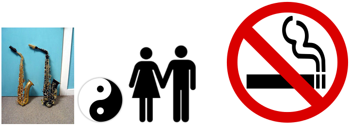
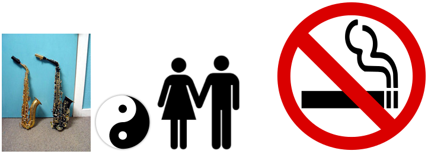

N.30 Домашнее задание DRAGNDROP
Подключить в проект из библиотеки веб-страницу dragdrop.html. Она выглядит так:

Реализовать на JavaScript возможность перетаскивания мышью по веб-странице этих картинок. Обрабатывать как минимум события mousedown, mousemove, mouseup; поддержку браузером drag&drop не использовать.
Изображения должны «таскаться» мышью за любую точку (т.е. и при «взятии» и при «отпускании» изображение смещаться не должно, оно должно смещаться только при смещении мыши при нажатой левой кнопке, ровно настолько, насколько смещена мышь).
Код не должен зависеть от количества картинок (т.е. код должен сам найти все картинки, которые есть на веб-странице).
Код никак не должен зависеть от того, как именно свёрстаны картинки — какие атрибуты и стилевые свойства им заданы.
Когда начинается перетаскивание какой-либо картинки, остальные картинки не должны сдвигаться.
Картинка, перетаскивание которой началось, должна сразу оказаться выше (ближе к глазам), чем остальные (z-index). После окончания перетаскивания картинки z-index ни одной из картинок меняться не должен, т.е. взаимный z-index картинок должен остаться тем же, каким был во время перетаскивания.
На время перетаскивания менять форму курсора на какую-нибудь подходящую.
Вёрстку страницы никак не менять; вся работа — только внутри тега <script>.

Реализовать на JavaScript возможность перетаскивания мышью по веб-странице этих картинок. Обрабатывать как минимум события mousedown, mousemove, mouseup; поддержку браузером drag&drop не использовать.
Изображения должны «таскаться» мышью за любую точку (т.е. и при «взятии» и при «отпускании» изображение смещаться не должно, оно должно смещаться только при смещении мыши при нажатой левой кнопке, ровно настолько, насколько смещена мышь).
Код не должен зависеть от количества картинок (т.е. код должен сам найти все картинки, которые есть на веб-странице).
Код никак не должен зависеть от того, как именно свёрстаны картинки — какие атрибуты и стилевые свойства им заданы.
Когда начинается перетаскивание какой-либо картинки, остальные картинки не должны сдвигаться.
Картинка, перетаскивание которой началось, должна сразу оказаться выше (ближе к глазам), чем остальные (z-index). После окончания перетаскивания картинки z-index ни одной из картинок меняться не должен, т.е. взаимный z-index картинок должен остаться тем же, каким был во время перетаскивания.
На время перетаскивания менять форму курсора на какую-нибудь подходящую.
Вёрстку страницы никак не менять; вся работа — только внутри тега <script>.